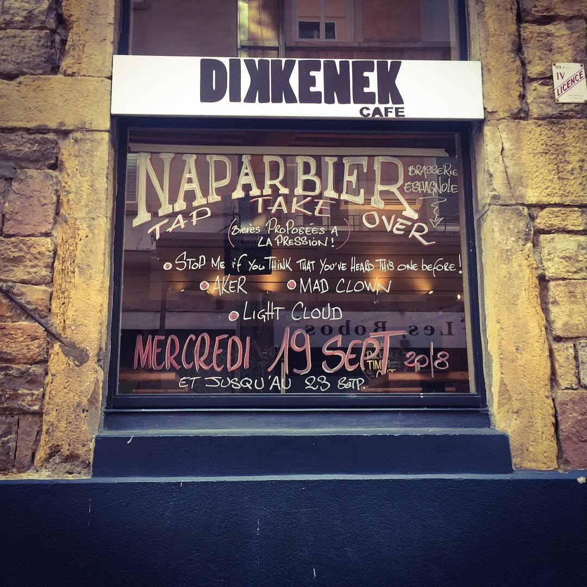
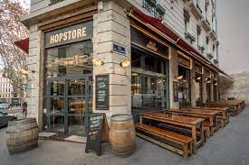
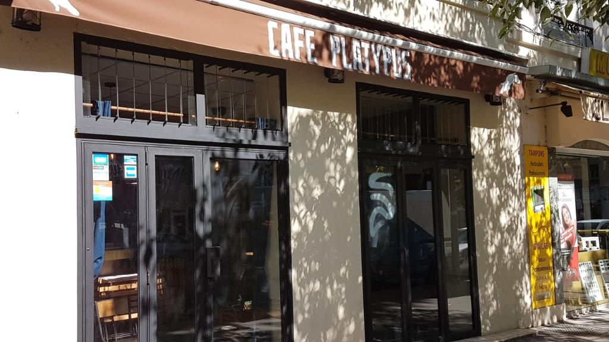
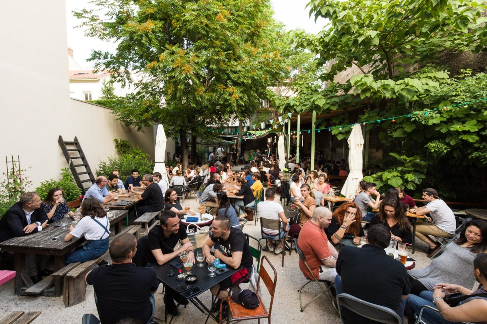
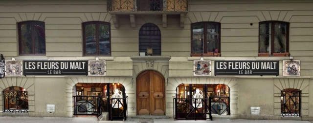

Dikkenek

- Grand choix de bières
- Déco sympa
Hopstore

- Terrasse sur le fleuve
- Ouvert uniquement aux beaux jours
Platypus Brewpub

- Juste à côté de la Wild :)
- Les rhums arrangés en fin de soirée
Bieristan

- La terrasse
- La sympathie des barmans
Les fleurs du malt

-
Les "heures heureuses" : joue à pile ou face le prix de ta bière !